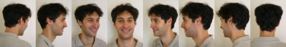

Peux-tu te présenter rapidement ?
Je suis né à Lille le 27 juin 1973. Cependant mes ascendances ne sont pas nordiques : mes parents tous deux d’origine italienne sont nés en Algérie française et à l’indépendance en 62 se sont retrouvés bon gré, mal gré à Liévin dans le Pas-de-Calais. Ce n’est pas que le Nord-Pas-de-Calais soit une région désagréable, bien au contraire, mais je pense que ce n’est pas forcément là qu’ils auraient, au départ du moins, souhaité passer leur vie. Même si nous avons eu la même éducation (plus méditerranéenne que du nord), je suis moins attaché à cette région que mon grand frère ou ma petite soeur. C’est comme si je ressentais moi-même un déracinement comparable à celui qu’ont vécu mes parents. C’est peut-être aussi dû au fait que j’ai quitté Lille pour Paris en 95 et que je ne me suis jamais vraiment senti chez moi dans notre belle capitale, même si j’y ai passé des moments formidables !
Pour parler un peu de mes activités, je suis, pour la plus grande partie de mon temps, ingénieur informaticiiiieeen ! Même si les contraintes de mon travail (délais, retard, problèmes d’organisation, clients mécontents, ...) pèsent parfois très lourd, je suis profondément passionné par l’informatique, au grand dam d’Eve-Laure d’ailleurs !
Je pratique aussi l’Aïkido régulièrement (deux fois par semaine, quelques stages le week-end et au moins un grand stage d’été). Cela m’apporte beaucoup et m’a permis d’entreprendre une recherche sur moi-même qui va à l’encontre de la séparation occidentale du corps et de l’esprit. C’est là que j’ai rencontré mon professeur Laurent, qui est avant tout un ami.
En parlant d’amis et de proches, je dois avouer que, n’étant pas un grand fan du téléphone, je ne leur donne sûrement pas assez souvent de mes nouvelles. Ce site leur est ainsi dédié pour que, je l’espère, nous puissions rester en contact pendant cette année de voyage.
Comment cette idée a-t-elle germé ?
C’est simple : en discutant sur le palier avec Claude, mon voisin d’en face, j’ai appris qu’il recherchait un logement plus grand et quand il m’a annoncé l’estimation qu’un agent immobilier avait fait de son appartement (qui est la copie conforme du nôtre), j’ai alors réalisé l’importance de la plus-value faite en quelques années seulement.
C’est alors que je me suis demandé ce que je pourrais faire avec cet argent, en terme de projet vraiment personnel. Et comme un défi à moi-même, j’ai lancé : "Un tour du monde !". J’en ai parlé le jour même à Eve-Laure qui a pris ça à la rigolade au début, mais qui a été très rapidement séduite par l’idée.
Pourquoi partir faire le tour du monde pendant un an ?
En fait, la décision a été tellement soudaine, que je me demande si ça ne me trottait pas plus ou moins inconsciemment au fond de la tête depuis longtemps. Il faut dire que je suis toujours revenu enchanté des quelques voyages que j’ai faits, surtout ceux qui m’ont permis de découvrir des pays très différents du mien. En particulier en 99, lorsque je suis allé rejoindre mon ami Alexis qui travaillait à ce moment là à Singapour et que nous nous sommes envolés tous les deux pour Bali en Indonésie. C’est là que j’ai découvert, pour la première fois, une société et un mode de vie totalement différents du nôtre qui m’ont permis de voir autrement un certain nombre de concepts sur lesquels j’avais une vision peut-être un peu simpliste (immigration, religion, pauvreté, ...)
Peut-être, ce que je recherche en premier, est de faire l’expérience de la relativité du monde pour grandir un peu plus. En effet, je ne veux pas partir pour rester ailleurs, mais pour revenir (c’est que je pense pour l’instant) et étant d’un naturel assez anxieux et stressé, j’espère arriver à déterminer alors toutes les fausses contraintes et faux problèmes qui peuvent rendre la vie plus compliquée qu’elle ne l’est, que ça soit dans le travail ou dans toutes les relations en général.
Je veux aussi goûter différemment à la liberté. En plaquant tout : travail, logement, biens matériels, (bon d’accord, on triche un peu : j’ai posé un congé sabbatique et nous ne partons pas sans le sou), je me sens confronté à une sorte de vide qui peut faire un peu peur : "Et maintenant qu’est-ce qu’on fait ?" Depuis tout petit, j’ai été habitué à avoir un cadre, à ce que les autres attendent quelque chose de moi. Se placer en dehors de ce cadre, m’oblige à me confronter à moi-même et peut-être à mieux apprendre à oser, prendre des initiatives.
La beauté des paysages que nous allons traverser va sûrement être un plaisir pour nos yeux, mais peut-être aussi un avertissement, voire un signal d’alarme pour nous inciter encore plus à préserver la planète.
Le plus beau cadeau que puisse me faire Eve-Laure est que nous partions ensemble pour expérimenter tout cela à deux. Il est vrai que je ne serais jamais parti tout seul, mais surtout, je pense que beaucoup de voyageurs aimeraient pouvoir partager un grand périple en couple. Le fait d’être tous deux motivés par un projet aussi original, me semble être un signe du destin !
Que pensent tes proches de ce voyage d’un an ?
Ce qui est sûr, c’est que l’annonce du voyage laisse peu de personnes indifférentes ! Certains et certaines ne s’expriment pas, mais je suis sûr qu’ils n’en pensent pas moins.
Mes parents en premier, sont naturellement inquiets pour nous deux mais maintenant je pense qu’ils commencent à s’habituer à l’idée de notre départ et ils vont même peut-être nous rejoindre lors de notre voyage.
En ce qui concerne ma famille ou mes amis, certaines personnes ont été surprises, mais très peu négatives, je suis en tout cas très touché par leur soutien en général.
Je ne sais pas si c’est parce qu’elles sont moins soucieuses de ne pas blesser ouvertement, mais certaines personnes moins proches peuvent se permettre de critiquer le projet assez directement voire agressivement. Même si ces réactions sont parfois inattendues ou surprenantes, elles ne m’inquiètent pas et ne changent pas ma détermination à partir. Je me dis juste que ces individus ne doivent pas assumer leur situation actuelle à 100 % !
Octobre 2004
Michaël